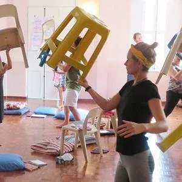
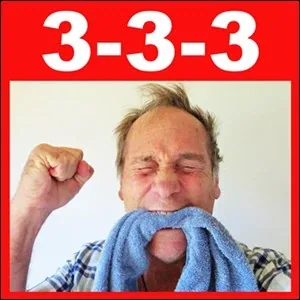
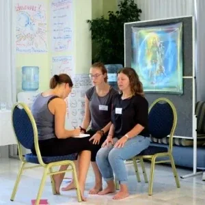
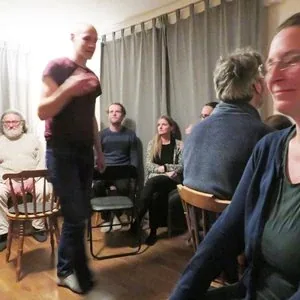
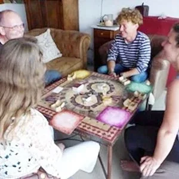

How To Play StartOver.xyz on Strikingly
[
](http://conscioustheater.mystrikingly.com/)
CONSCIOUSLY DISAPPROVE OF PLAY
Matrix Code HOWTOPLA.01
Deep in your past, deep in your nerve cells, you carry fears of getting caught playing around with yourself, or with others, when you should be working, studying, doing your chores, getting things done, and being serious about your life!
That fear lives inside of you because it lived inside of your parents, grandparents, teachers, preachers, neighbors, bosses, colleagues and leaders. They passed on what they learned - and perhaps the same way they learned it... with a ruler on your knuckles or a belt on the rear.
Reserve at least 20 minutes for yourself to do this writing EXPERIMENT. Title a new page in your Beep! Book PLAY IS BAD BECAUSE: then start writing before you think. Let your heart speak; your soul speak. Use harsh words, critical words, words that were spoken at you so often and so intensely that you began speaking them to yourself over and over in your own mind.
There are threats, comparisons, horrible consequences if you play. Write them all down and, if you can, write who said them to you... and why they said them, what they were afraid of.
The way to gain choice in areas where powerful voices have severely limited the available options you have to choose from, is to make the voices conscious. It may not be pretty. Start where you are.
After completing this experiment, please register Matrix Code HOWTOPLA.01 in your free account at StartOver.xyz. This Experiment is worth 1 Matrix Point.
[
](http://8prisons.mystrikingly.com/)
FIND OR MAKE KEYS THAT LET YOU OUT
Matrix Code HOWTOPLA.02
Get with a friend, or bring this EXPERIMENT to your Possibility Team, and ask them to help you create a new strategy to liberate your aliveness. You cannot expand your aliveness simply by thinking about it. New behavior comes from new context. You can release new aliveness by doing edgework Experiments that build new Matrix to sustain your new freedom of movements.
Read your friend (or your Team) your list of voices from the EXPERIMENT above (HOWTOPLA.01). As you read what the voices have been telling you out loud, feel what each voice causes in you. It might be anger, sadness, fear... let it get big. Express to your friends what you feel about it. They can hold space for you.
After this, circle the 3 most potent voices that have been keeping you in prison. These are the bars that block you from expanding and exploring your own aliveness and being inspired by the aliveness of others.
For each of these 3 bars, say: "Please give me possibilities for Experiments to try that will get me over, under, around, or through these bars." Ask them to be precise about how many times per day, or per week and for how many weeks, what the purpose is, what intention you should hold, where to place your attention and for how much time, etc. The wilder, the better. These are the keys that will open your prison's doors.
Write down in your Beep! Book exactly what your Team says. Not what you heard them say. Not what you understood them to say. Write down word-for-word what they said.
Then ask who would be willing to hold space for you while you do every-single-one of their EXPERIMENTS.
You take ownership of the prison keys by using them.
What good are prison keys if you don't use them? ...This is not a rhetorical question. Answer it in your team and you will quickly find yourself face-to-face with several creatures in your own Underworld.
After completing this experiment, please register Matrix Code HOWTOPLA.02 in your free account at StartOver.xyz. This Experiment is worth 1 Matrix Point.
[
](http://livefullout.mystrikingly.com/)
NOTICE THE NATURAL PLAYFULNESS OF CHILDREN
Matrix Code HOWTOPLA.03
It is still in you... that natural playfulness of Being alive on this incredibly beautiful Planet Earth, of being Present, of having the capacity in every moment to go Nonlinear, of being attracted to whatever the hell you are attracted without having to give reasons or have a plan.
When a child plays, they naturally play at Child-Level Responsibility. This means they make messes with no real capacity to estimate the time, energy, money, or emotional cost of the mess they made or the capacity to clean it up. Someone else has to clean up the mess... the adults. The moment you understand that there are levels of responsibility that can be taken, it becomes instantly clear that modern culture is centered on Child Level Responsibility. Modern culture is making huge toxic global messes with no intention at all of ever cleaning them up. This is Gremlin level responsibility... irresponsibility... serving unconscious shadow-world purposes of greed, power over, competition, and making many losers.
Another level of responsibility you can play in is adult level responsibility. Adult responsibility is fair and reasonable. If I make a mess, I will clean it up. If you make a mess then you must clean it up. When an adult plays they play
You can begin to play at a third level of responsibility through becoming initiated. Authentic adulthood and archetypal initiations give you access to playing at the level of Radical Responsibility. Radical Responsibility is not fair. It is not reasonable. It is, in fact, it is extremely unreasonable to take radical responsibility - in the same way that it is unreasonable for the girl in the photo to be having so much fun playing in the lawn sprinkler with all her clothes (and hat...) on, because the lawn sprinkler is not a toy. It is a lawn sprinkler. And it is probably not even HER lawn sprinkler. It belongs to some 'adults' who are 'trying to water their lawn', and she probably did not even ask permission. She just jumped in. Similarly you can jump into your life. You can jump into life at large, in a bigger way, using Radical Responsibility. Nobody can take Radical Responsibility for you. On the other hand, nobody can stop you from taking Radical Responsibility.
This EXPERIMENT has 2 PARTS. You can alternate doing PART 1 and PART 2 during the same week.
PART 1: Once each day this week for 5-10 minutes, put your open, non-analytical, receptive attention on the way a child, or children, relate playfully with the world. (Beware that parents are particularly sensitive to 'strangers' putting attention on their children for fear of pedophiles. Find ways to be far enough away in a park, or walking slowly by a public playground, or sit in the grandstands at a pony tournament, or a baseball or soccer game... yet at all these places the 'playing' is framed up in adult terms with rules and purpose.)Try to find young children on the loose and be absolutely invisible and non-intrusive, yet still notice the freedom and purpose of their attention and intention.
Notice 'playfulness', meaning, 'without a purpose other than to play'. You might notice how insane being playful looks, so insane tha if you behaved as they behave other adults would think you are mentally or psychologically handicapped. People have told you to 'act your age' and other such nonsense, so you have put play away. In your meditation on childishness in PART 1 of this Experiment, find your way back to the source of pure play within you.
PART 2: Once each day this week, for a minimum of 15 minutes, do unreasonably-responsible play without permission. You get to do free-and-natural initiated adult Play - even if you do not really understand what this is right now. For example, if someone tries to insult you, refuse to bite the hook. Or, shift a conversation from Low Drama to High Drama. Or, bring Transformation into the context of your conversation. When other people get lost in their confusion or their victimhood, take a stand for being a Doorway into the Bright Principle of Possibility. Make huge messes and then clean them up as part of the Play. The intention for Experimenting with Radically Responsible Play is to establish and navigate a co-intelligent collaborative invention space where others can ecstatically co-create with you.
After completing this experiment, please register Matrix Code HOWTOPLA.03 in your free account at StartOver.xyz. This Experiment is worth 1 Matrix Point.
[
](http://pirate.mystrikingly.com/)
TAKE BACK YOUR AUTHORITY TO PLAY
Matrix Code HOWTOPLA.04
Something special is needed for you to take your authority back and Play full out. (We use a capital 'P' to differentiate real Play, conscious Play, intentional Play, and responsible Play from child's play or Gremlin play.)
Who defines your play?
Is it Your Gremlin who decides? Or you?
What is the difference?
(If you are not absolutely clear in each moment about the difference between when the adult you Plays and when your Gremlin is eating - because your Gremlin does not play, he eats - if you are not experientially clear enough to navigate each moment of your Play gestures, then your Gremlin is eating the most delightful parts of your intimacy and your aliveness. He is eating your exquisite opportunities to create and experience delight and changing them into Gremlin shit...)
Who gives the Free And Natural Adult You permission to play?
Who gives your Gremlin permission to play?
(Do you want your Gremlin to be driving your life? You might want to rethink your decision about that... He has the potential to help you create High Level Fun... Perhaps you should study more about what this Gremlin part of you is up to...)
Who makes the rules for your Play? When can Play start? When must it stop? Why?
Who sets up the Play space? Who is in? Who is out? Why?
Who decides who can Play with you?
Who pays for your Play?
Who cleans up the Play mess?
Who gets to choose what you do, how far it goes, how long it lasts?
Who tells you what time to go to bed at night?
Is it the police? The law? The neighbors? Your guilt? Your shame? The voices of your parents in your head?
This EXPERIMENT is to create a Sacredly Playful birth-ritual with your friends that establishes a new beginning of the Free And Natural Adult you taking back your authority to grant yourself permission to determine with Radical Responsibility - from now on and forever - everything about your Play.
After that you may start breathing with more joy...
After completing this experiment, please register Matrix Code HOWTOPLA.04 in your free account at StartOver.xyz. This Experiment is worth 1 Matrix Point.
[

](http://becomeanexperimenter.mystrikingly.com/)
BECOME A PLAYFUL EXPERIMENTER
Matrix Code HOWTOPLA.05
A standard understanding of what it means to be an experimenter is someone who is perhaps a paid scientist working in a laboratory trying to produce serious results. In StartOver.xyz you get to start over with your understanding of being an experimenter.
We offer you a new definition of 'Experimenter' as a 'Playful Experimenter', which is: 'Someone trying a new behavior or approach being uncertain of the outcome but willing to improvise along the way and noticing what works and what does not work in order to get it better next time'.
This EXPERIMENT is to once a day this week to be a Playful Experimenter and do a Playful Experiment. In other words, try something your Being has wanted to do but which your mind would not allow because the thing you wanted to try was not serious. What could that possibly be? Your Being has plenty of answers for you. Here are some ideas to get you started:
- Fly a kite as high up into the sky as possible. Buy as much string as necessary, several kilometers if needed. Have someone take a photo and send in an article to the local newspaper about why Playful Experimenting is so important to the future of human beings on Earth.
- Have a cash rolling party where everyone brings thousands of dollars of cash to your livingroom and puts it into a pile in the middle of the floor. One after another, taking all the time you need, roll around in the mountain of cash. Bathe in it. Let it soak in. Get the power of collaboration, how you all made this experience happen together.
- Figure out how to go ride on a camel, or an elephant, or a horse. Spend time connecting heart to heart with this animal. Look deeply into its eyes, all the way into its Being. Be grateful for the opportunity to be so close and to even touch and caress another of Gaia's amazing creatures.
- At your next Possibility Team (online or offline) have each person bring a soft pillow. At the count of 1,2,3! Have a gigantic Play Fight Pillow Fight. Yes, you might end up pillow-fighting yourself if the pillow fight in online. Don't worry. This will make total sense when you watch the Brad Pitt / Edward Norton film: Fight Club... it is on The List and watching it (caution, it is intense...) earns you 1 Matrix Point for the StartOver.xyz game.
- Get some kind of paints and some kind of canvas and some kind of brushes, or use your hands and feet (or whole body) and paint the world as it is for you. Perhaps the painting will be about how the world WAS for you, and how it is BECOMING for you now that you are a Playful Experimenter!
- Etc.
After doing your Playful Experiment, write in the inside front cover of your Beep! Book: "I am a Playful Experimenter."
Then today or tomorrow, explain to someone the rather outrageously PLAYFUL EXPERIMENT you did, how it went, what you learned, and what you might do differently in your next PLAYFUL EXPERIMENT.
After completing this experiment, please register Matrix Code HOWTOPLA.05 in your free account at StartOver.xyz. This Experiment is worth 1 Matrix Point.
[
](http://shiftidentity.mystrikingly.com/)
IMITATE AN ANIMAL WHILE IT PLAYS
Matrix Code HOWTOPLA.06
Most people will never get a chance to be hugged by an elephant. That is a rare, surprising, possibly even dangerous or intrusive endeavor. That does not have to stop you from sharing Being to Being contact with an elephant, or with a seagull, or even a fly.
It is undeniable that cats and dogs play with each other, especially as infants. But if you liberate your senses from preconceived human-centered arrogance and intensely observe certain flies, the kind that congregate in the middle of your livingroom, or swarm together on a summer afternoon along a path through a field, and sense into what they are up to... you are left with few options other than concluding that they are playing together. They are not sleeping, eating, fighting... perhaps they are in foreplay for sex... but certainly this could be classified as play.
Watch a seagull flying so skillfully and easefully along the updrafts in front of an ocean-facing cliff or building for no apparent reason other than that it can actually fly. This is play.
This EXPERIMENT is to start by choosing an animal species, whatever you are attracted to or interested in. Arrange to get close enough to one or more of these animals in nature. If you cannot do that, then find videos of them online. Watch some of these videos without trying to interpret the animal's behavior as them being human. Do not anthropomorphize the animal's behavior. Instead, go the other way. Forget life necessities as a human being. Instead get into the perceptions and needs of the animal. Find where they put their center, their attention. Find how much fear they feel, almost all the time, the alertness, the wariness. Then, in the spaces between, when all is well and nothing else is up, what moves do they make with each other or with their surroundings? How are they experiencing themselves? Breathe like them. Listen like them. Relate to things like them and I bet you, sure enough, there will be times when you will discover they are playing. Then play with your world like they play with theirs. Do this several times a week for the next few weeks. This could change your connection to all of nature, to Gaia, to your conscious will, and to consciousness at large... or not.
After completing this experiment, please register Matrix Code HOWTOPLA.06 in your free account at StartOver.xyz. This Experiment is worth 1 Matrix Point.
[

](http://firstposition.mystrikingly.com/)
PLAY IN YOUR PHYSICAL BODY
Matrix Code HOWTOPLA.07
This EXPERIMENT is, for the next week, no matter where you are, for two hours each day, shift your interpretation and take your authority back to redefine spaces so that you look at each set of circumstances as your personal play ground. Put on a different set of glasses so that you perceive every single object in the space as a magical toy for concocting new ways for you to get truly creative.
These are not win-lose games you are playing. They are Winning Happening exploration, rapid-learning, Box Expansion games.
The experiences that you invent for yourself... don't just imagine them. Actually try them out, spontaneously, without hesitation and without permission.
Yes, you might be moving outside of the frame of what is ordinary or normal, you might break social limits, cross superstitions, function outside of Standard Human Intelligence Thoughtware... but mostly what you will be breaking is your inner construct that tells you what things are and what they are supposed to be used for.
Functioning outside or beyond the limits of your construct you may delightfully surprise even yourself about what you discover. You may become more self-entertaining.
During these two hours each day, use physical objects - and other people as physical objects - to practice deepening your Possibilitator skills, such as Centering, juggling, balancing, re-naming, throwing and catching, Improvising, taking Radical Responsibility for the Purpose of your Story Worlds, Becoming Abundant, Becoming A Pirate, Becoming Unhookable, and Navigating to Archetypal spaces. This gets to be so much fun you might not want to stop expanding this EXPERIMENT... ever...
After completing this experiment, please register Matrix Code HOWTOPLA.07 in your free account at StartOver.xyz. This Experiment is worth 1 Matrix Point.
[
](http://causetransformation.mystrikingly.com/)
PLAY IN YOUR INTELLECTUAL BODY
Matrix Code HOWTOPLA.08
Your Intellectual Body has been obscenely distorted through being forced to attend public schooling and being indoctrinated into the Verbal Reality of modern society's media. But there are ways to play around with the expanded capacity of your Intellectual Body. Your EXPERIMENT is to choose one of the following, or invent you own version:
- Memorize the lyrics of a song you like and dance through your house, apartment, or neighborhood singing your song out loud, no matter how badly you sing (or dance...)
-
Choose a theme that is somehow important to you right now and assemble 3 Distinctions that create extraordinary clarity about your theme. Remember, a Distinction is not an opinion or a belief. A Distinction reshapes a person's relationship to reality by giving them a way to discern two categories of things where before they could only perceive one category. This empowers them to make choices or create moves that might not be possible for others. Here is an example of 3 distinctions:
-
New distinctions create new clarity.
- New clarity creates new power.
- New power allows you to take responsible actions in new areas of life.
-
Therefore, new distinctions give you new aliveness.
-
With the results of your research in #2 above, write a short article and publish it on Medium, Academia, OpEdNews, Democratic Underground, TruthOut, Dissident Voice, FlipBoard, AND FaceBook.
- With the same results of your research in #2 above, call radio talk shows and online interview platforms and offer to be interviewed on your theme. When you are talking, try to stay out of your head. Instead, hold your Possibility Stone in your hand and go into Experiential Reality so that you can Speak From The Unknown. Each question the interviewer asks you is a Held Space that you can speak into. It makes for a far more valuable conversation than merely trying to answer their questions. Say what people need to hear rather than what they want to hear. You may even end up doing Dragon Speaking! Yay!
After completing this experiment, please register Matrix Code HOWTOPLA.08 in your free account at StartOver.xyz. This Experiment is worth 1 Matrix Point.
[

](http://3-3-3.mystrikingly.com/)
PLAY IN YOUR EMOTIONAL BODY
Matrix Code HOWTOPLA.09
Modern culture is centered around the Physical Body (looks, clothing, makeup, appearances) and the Intellectual Body (education, certificates, degrees, I.Q., information, knowing). Modern culture remains almost completely unaware of three additional bodies that every human Being wears: Emotional Body, Energetic Body, and Archetypal Body.
The fact that you were not informed about your 5 Bodies does not mean you do not have all 5 Bodies. It merely means that consciously inhabiting your additional three bodies will require expanding your awareness and your practices. This Experiment is about exploring how to Play in your Emotional Body.
Your Emotional Body experiences both feelings and emotions, either consciously or unconsciously, and either in their pure form (anger, sadness, fear, joy) or in mixed formulations (such as depression, aggression, despair, jealousy, greed, envy, shame, guilt, disgust, melancholy, burnout, hysteria, etc.).
Your Emotional Body experiences and expresses these feelings or emotions in various intensities all the way from 0% intense (totally numb, with your Numbness Bar set to the highest level) up to 100% intense (with your Numbness Bar all the way lowered).
How you perceive and apply the precious energy and information from your Emotional Body depends to a large degree on whether you live inside of the Old Thoughtmap of Feelings, or the New Thoughtmap of Feelings.
This EXPERIMENT is about learning to play in your Emotional Body as if you are feeling your feelings consciously. Start by memorizing these two sentence:
- "If I were feeling my (anger, sadness, fear, or joy) consciously I would tell you _____________."
- "If I were feeling my (anger, sadness, fear, or joy) consciously I would take this action: _____________."
Then, for the next 3 weeks, say either of these sentences 2 times to yourself, and 2 times to another person. It may feel like you are making it up. This is the play part. You are acting as if you are consciously feeling.
NOTE: At this point is may not be useful to say these sentences to a group, such as at a meeting, or to your whole family. This Experiment is to say the sentences either to yourself privately, or to one other person who only needs to be able to hear what you say, and repeat back what you said, without adding in any of their own interpretations.
Feelings and emotions are not a problem. Feelings and emotions are the solutions to problems. About now it could become exceptionally useful for you to discover the world of difference between feelings and emotions.
After completing this experiment, please register Matrix Code HOWTOPLA.09 in your free account at StartOver.xyz. This Experiment is worth 1 Matrix Point.
[
](http://navigatespace.mystrikingly.com/)
PLAY IN YOUR ENERGETIC BODY
Matrix Code HOWTOPLA.10
The fact that you were not informed about your 5 Bodies does not mean you do not have 5 Bodies. It merely means that consciously inhabiting your Emotional, Energetic, and Archetypal Bodies will require expanding your awareness and your practices. This EXPERIMENT is about exploring how to Play in your Energetic Body.
Your Energetic Body senses a great variety of relations and factors that add or subtract from the quality of your every day life, for example:
- Is someone too close to you, or too far away?
- Does the space need more sacredness (e.g. should I put a candle on?)?
- What is the placement of things in a space to create the most elegance?
- What is other people's resonance or dissonance to a proposal or offer?
- What is the best timing of when to say something and when to stay silent?
- What job or object belongs to me to take care of and what belongs to others?
- What status transactions are going on between me and others, or between other people in the space?
- What word or action is appropriate now?
- How close am I to the edge of what the space will allow, meaning, what are the unspoken rules, assumptions, expectations, and protocols of the space?
- Whose space it is, meaning, who is the spaceholder?
- What is the purpose of this space, and am I in alignment with that purpose or not?
This EXPERIMENT is three times each day this week, choose one of the elements or qualities listed above that your Energetic Body notices and play around with it. That means, do something a little energetically different from how people in the space assume it should be, or, overdo it consciously, or, make a non-malicious parody of it, or, make it the topic of conversation, or, have a Metaconversation about energetic body awarenesses.
NOTE: Please do NOT get yourself arrested, for example, by yodeling in the bank, or peeing on the church. Getting arrested is a different EXPERIMENT. You have many additional experiments to do before that one to build your matrix.
When you do your EXPERIMENTS, see if the space wakes up more, or if it defends itself and goes back to sleep more.
Figure out ways to wake-up a space more and make notes in your Beep! Book about how to do it.
Just because the space goes back to sleep about energetic assumptions and awarenesses does not mean you have to. One woman's magic is another woman's science...
After completing this experiment, please register Matrix Code HOWTOPLA.10 in your free account at StartOver.xyz. This Experiment is worth 1 Matrix Point.
[
](http://egostate.mystrikingly.com/)
PLAY IN YOUR ARCHETYPAL BODY
Matrix Code HOWTOPLA.11
Playing full out includes improvising with impulses and energy from all of your 5 Bodies. This Experiment is about exploring how to Play in your Archetypal Body.
What is your Archetypal Body? It is those elements in you that can understand or be inspired by mythical tales, super-hero stories, legends of the Greek and Roman Gods, and your vast potentials. Your Archetypal Body turns on when you hear someone say that life is about more than just another day of survival in mediocrity.
Your Archetypal Body lights up to hear that it is possible to clarify and ignite your true purpose, your destiny, and that there are ways and supporters for you to take steps along your Path of conscious evolution. There is a role for you to play in the great unfolding high-drama of human beings fulfilling their potential and creating heaven on Earth. Human beings are designed to create and inhabit archetypal spaces and to negotiate archetypal intimacies with each other. Yes. How do we know this? Because we are ongoingly doing it and showing other people how to do it too. It is so intensely fulfilling that any nuisance from being in Corona Virus lock-down for 3 months is almost undetectable by comparison.
Obviously there is a lot to discover about all this and to prepare yourself for activating your Archetypal Body, and... there is no time like the present to start.
The EXPERIMENT is: three days each week (e.g. Monday, Wednesday, Friday) for the next 3 months, for at least one hour each day, make an Archetypal Body gesture.
What is an Archetypal Gesture. Here are some examples.
- Make a specific commitment to a specific person to deliver a specific result, and not matter what happens, deliver the result.
- Take a bigger stand for someone else to heal, grow up, or shine out than they take for themselves.
- Take a stand for creating a possibility that serves the evolution of others.
- Show up glorious, radiant, clear, proactive, resourceful, generous, and kind for no reason, even when circumstances would trigger most people to be the opposite.
- Take a stand for what the Archetypal Vision-Holding part of yourself wants to see exist in the world. Stand in the space where it is possible for this to come into existence. Refuse to leave that space. Speak about your vision at a WorkTalk. Train other people how to take a stand for their own Archetypal Vision at a WorkShop.
- Interact with circumstances and possibilities from within the space of an archetypal meta-view of what is going on, in other words, from the big picture perspective.
To do these things you may need to practice being various archetypal characters such as a Queen, Angel, Wizard, Knight, Alchemist, Sorceress, Earth Guardian, Village Weaver, or a specific Superhero. This is a matter of placing your Point Of Origin into that archetypal character's space and connecting to the reality in which they are grounded. Then use the experience of being that character as the source of your speech patterns, the way you place and hold Your Attention, how you move your physical body, remaining intimately aware of what Your Purpose is behind what you say and do.
Playing in your Archetypal Body is a high-level form of Play, very rewarding, educational, inspiring, possibly even transformational. You may find yourself Dragon Speaking in circumstances where you might normally hide out. You might find yourself Speaking From The Unknown and being as excited or frightened about the next thing that comes out of your mouth as the person you are speaking to. On the other hand, you might find yourself using Conscious Will to meditate in silent Self Observation in circumstances where most people are boisterously partying. This too is Playing in your Archetypal Body.
After completing this experiment, please register Matrix Code HOWTOPLA.11 in your free account at StartOver.xyz. This Experiment is worth 1 Matrix Point.
[
](http://declaring.mystrikingly.com/)
WORK AS IF IT IS ONLY PLAY
Matrix Code HOWTOPLA.12
This EXPERIMENT has 2 PARTS.
PART 1: Meet with one or more people on or offline and share what you think about the following statements.
READ OUT LOUD: Each of these statements below is a meme. A meme is like a gene in that, while a gene is the smallest design instruction for the shape of your physical body, a meme is the smallest design instruction for the shape of your Intellectual Body, your psychology.
Possibility Psychology brings your awareness to the inner construct you built long ago out of a few such memes as these. You can then notice how this construct has shaped the world for you. You have surrounded yourself with people who conform to your meme construct with their behavior, and you remain stuck in the construct as if it were reality.
The following are unusual memes. What do you think about each of them?
- Life is play.
- Work is play.
- Learning is play.
- Healing is play.
- Transformation is play.
- Playing is play.
PART 2: Choose one of the 6 memes listed above and for the next week, use it as if it is one of your core memes. Watch your perceptions, value judgements, comments, and behaviors shift as you 'act as if' this new meme was yours for real. Make notes of your observations in your Beep! Book.
After completing this experiment, please register Matrix Code HOWTOPLA.12 in your free account at StartOver.xyz. This Experiment is worth 1 Matrix Point.
[
](http://doorway.mystrikingly.com/)
OPEN DOORWAYS FOR EACH OTHER
Matrix Code HOWTOPLA.13
You can do this EXPERIMENT either with a personal friend, or in pairs in your Possibility Team (online or offline).
PART 1: (10-15 minutes) Pull out your Beep! Book and commune with the inner adventurer in you... the playful explorer... the parts who have not yet experienced all the life they want to experience. Let these parts have your pen. Do not edit what they write down. Cry. Let the long suppressed tears pour down your cheeks. Shout in rage. Scream while you write. Just keep writing.
The questions are: Where would you like go? What would you like to create, invent, change, transform, discover, explore, learn, try out, build, taste, say, write, perform, give birth to, initialize? Who would you like to do this with? What do you long to get out of it?
Write.. sketch... scribble... draw... write some more. Write before you think. Keep going. Let your next deeper levels have a voice. Unleash your long past or distant future inner knowings to share their longings. Do not worry if what you write is impossible, impractical, too dangerous, too expensive, never invented or done before. Let your soul spring out onto the paper so you can meet it. Immediately use your Voice Blaster to shoot any voices that might want to criticize or praise what comes forth. Blam! Keep feeling, hollering, and writing.
PART 2: (15-20 min per person) Huddle together in pairs or groups of three. One person goes first. Read what you have written in PART 1. Do not leave out anything. Explain what you mean if anyone has questions. But this is not discussion time. This is Doorway invention time. As soon as you finish reading start writing what the other people say. This is time for your adventure partners to open nonlinear Doorways for you to go through.
A Doorway is the fuzzy (indeterminate, shift-zone, groundless) portal through which you slip out of one space and into another space. Getting into a new space is important because the Space determines what is possible.
Nonlinear Doorways lead orthogonally from the space you are in to extraordinary new spaces.
How do you locate, create, get close to, and go through nonlinear Doorways? The action involves a specific set of skills. You are practicing them now. They are easier to practice then to explain. You learn the skills by doing them.
Going through a Doorway either works or it does not work. You get feedback immediately.
For example, you cannot go through a door until you are at the door.
While your partner(s) are flooding you with the nonlinear Doorways to spaces and possibilities for an abundance of life-adventures to begin, you write exact details into your Beep! Book. If there is any part of their instructions you do not understand, simply say, "Can you say more about that?" Keep asking them to go deeper until what they are saying finds somewhere to land in you, all the while making sure it also lands in your Beep! Book.
During the next week or two, go through as many of the new Doorways as you can. Report back to your Team what happens next time you meet.
After completing this experiment, please register Matrix Code HOWTOPLA.13 in your free account at StartOver.xyz. This Experiment is worth 1 Matrix Point.
[
](http://possibilityacting.mystrikingly.com/)
TEACH SOMEONE ELSE HOW TO MAKE FACES
Matrix Code HOWTOPLA.14
Watch this Face Yoga S.T.A.R.R. 13 times with someone else as you join along in stretching and strengthening your face muscles.
Some researches claim that it takes 26 face muscles to smile, but 62 face muscles to frown. If you are trying to be a 'nice girl' or a 'good boy' and wear the 'smiley face' mask, then what this research indicates is that 62 muscles in your face are dying from not being used. You have become expressionless.
The muscles in your face are not there for no reason. They are not a human body design error. The muscles in your face are for communication, for expression of feelings and emotions so that other people can get the message, and can understand also the nonverbal parts of your communication. The muscles in your face are for connecting.
If you are feeling lonely or not connected, it could be because you have taught your face to be dead. Your situation can be remedied. Learn to make faces! Bring those muscles back to life!
However, if you limit your face-making practice to leaning over in the public toilet to see yourself in the stainless steel reflection of the toilet paper dispenser, your reflection may be distorted, and you do not experience the emotional-response feedback from other people.
In some cases, the best way to learn something is to teach it.
Making faces is one of those cases...
This EXPERIMENT is to arrange a free, once-a-day, 2-week-long, ten-minute Coffee-Break Face-Making Workshop. To begin with, set up a Zoom.us call and give out the link to 3 to 10 friends and acquaintances. The call starts at morning coffee-break time ends after 10 minutes - so everyone still has time to stretch your legs and get a coffee...
At each meeting, hold up a photograph that you have prepared to your screen so people can see the face they are trying to make in today's session.
You can use screen shots from Zombie films, FaceBook photos, or a photo you make of a friend who can already use their face muscles to create faces and moods. Jim Carrey makes amazing faces in Ace Venture Pet Detective: When Nature Calls. Practice Face Yoga.
You could even use this experiment's photo one time. Notice the flared nostrils on this man. Those are the nostril flaring muscles to develop. Both eyebrows are raised but the middle of the forehead is pulled down into a V shape in the opposite direction. Those are eyebrow and forehead muscles to develop. Notice the lower lips pulled down at the sides and away from the teeth at the same time. These are lip and chin muscles to develop.
Here are other ideas for sessions:
- Have everyone make a scared face and look at the others so see who has a face that communicates the most authentic fear. Each person gets immediate visual feedback and can do many face-muscle developing exercises during the 10 minutes of the call.
- Have the first person make a face either angry, sad, glad, or scared and have everyone else guess which one it is. Then have the next person make a face of one of the 4 Feelings and have everyone else guess, and so on.
- Have the first person make a horrible face and have the other people make up a short story to explain how it came to be that this person is having this face now.
- Have each person connect heart to heart with all the other people on the screen with eyes closed, and then slowly open their eyes. This is the face of joy. The joy we often see on TV or the movies is fake, over-exaggerated childish joy, or neurotically-overdriven joy, people jumping up and down waving their arms shouting, "Yu-hooo!" Have each person share about the moments when they have 3 seconds of 8% intense joy when taking a sip of their orange juice, for example, and admit that it is joy. If they cannot experience and express the 3 seconds of 8% intense joy, then they will miss the bigger spaces of joy.
WARNING 1: If you do this EXPERIMENT you may experience sore face muscles for a few days, muscles you did not even know you had.
WARNING 2: By learning to more freely express through your face the anger, sadness, fear, and joy that you feel, your relationships might get more dynamic and alive.
WARNING 3: By leading others into wildly new territory your nonlinear spaceholding skills will improve. Then who knows what your next experiment might be?
After completing this experiment, please register Matrix Code HOWTOPLA.14 in your free account at StartOver.xyz. This Experiment is worth 1 Matrix Point.
[
](http://gameworldtraditions.mystrikingly.com/)
PLAY WITH SOCIAL CUSTOMS
Matrix Code HOWTOPLA.15
If you hold you fork in some inexplicably weird way and eat a whole meal that way, in public, without explanation, it is likely that someone will ask you, "Why are you holding your fork that way?" That is when you could innocently ask, "What way?" When they try to indicate the way you are holding your fork, just look at them with genuine curiosity and ask "How did you learn to hold your fork the way your are holding it?"
Invariably they will say something like, "My parents taught me how to hold a fork this way." Then you can ask them, "How do you know if it is the best way for you to hold a fork?"
This could lead to an astonishing Memetic Engineering conversation that forms the basis of a Possibility Psychology transformational healing process... but that is not the purpose of this Experiment.
The purpose here is to go to the edge of ingrained or habitual social customs and play with them for the purpose of liberating yourself from their constraints.
The EXPERIMENT goes like this: Make a list in your Beep! Book of 10 SOCIAL CUSTOMS. These may be how you stand, dress, hold a conversation, hold your face, keep your hair, spend or don't spend time or money, eat, walk, wash up, etc. With each of the 10 customs, figure out how to go to the edge of that custom and change one part of your learned behavior pattern. Try your experimental behavior for one whole week.
Here is the thing: If you enact all 10 social custom shift Experiments at the same time, as a form of spiritual play, you will gain such an unexpected freedom of movement it will blow your mind.
You may never have realized how deeply imprisoned your Being has been, almost like wearing a social straight-jacket blocking you from even beginning to find out who you are.
You might start dancing through social interactions in the world with a level of unforeseen grace and nobility, certainly with more nimbleness and humor than previously.
After completing this experiment, please register Matrix Code HOWTOPLA.15 in your free account at StartOver.xyz. This Experiment is worth 1 Matrix Point.
[

](http://problems.mystrikingly.com/)
PLAY WITH PROBLEMS VERSION 1
Matrix Code HOWTOPLA.16
Playing with problems can be astonishingly effective. It applies each time you have a physical problem to solve, for example, let's say you can't reach something that fell under the couch, your fingernails are not sharp enough to open a tangerine peal, you have no wrapping materials to make a small package, you want to leave a note and have no pen or paper, or you want to send a package without using plastic of any kind...
Do not search your memory for a solution that you used before to solve this problem.
Instead, your EXPERIMENT is to solve the problem in an entirely new framework: ASSUME THAT THE UNIVERSE WOULD NOT GIVE YOU A PROBLEM WITHOUT SIMULTANEOUSLY GIVING YOU A SOLUTION WITHIN ONE ARM'S REACH FROM WHERE YOU ARE RIGHT NOW.
When the problem arises, stop for a minute. Let your physical body sway or move randomly. Often if you open yourself to this proposition, your foot, or a stray finger, will 'accidentally' brush against an object that can function in a new way to solve your problem.
Remember, function follows form.
This means that the shape and materials of an object determines the ways it can serve you when you drop your preconceptions about what everybody knows that it should be used for. You reclaim the power to use things for what they actually are rather than only for what they are typically recognized as.
After completing this experiment, please register Matrix Code HOWTOPLA.16 in your free account at StartOver.xyz. This Experiment is worth 1 Matrix Point.
[

](http://memeticengineering.mystrikingly.com/)
PLAY WITH PROBLEMS VERSION 2
Matrix Code HOWTOPLA.17
How do you know when you have a Problem?
How big of a problem is your problem?
How do you classify your problems? Do you divide them into separate categories? Or do you bunch them all together one one interconnected mountain of troubles?
Where do you carry your mountain of burdens in your physical body? In your emotional body? In your energetic body? In your intellectual body?
Who actually makes your problems for you?
What is a problem, anyway?
Do your problems come from inside of you?
Or do they come from the outside? From other people? From the government? From society? From the economy? From your neighbors? From your family's longstanding conflicts? From the circumstances of your birth, such as your culture, race, skin color, the religion of your parents, the city or country where you were born? From your genetics?
Soon it becomes obvious that almost anything can be a problem
Who actually has the power to decide if something has become a problem for you or not? Other people?
What if other people think that you should have a problem about something and you actually don't have a problem about it at all?
What if other people have a problem that you don't have a problem? Whose problem is that?
Why do you actually regard anything as a problem? What is your benefit?
If you decide (consciously or unconsciously...) that something is a problem for you, why have you done that? To be normal? Do you think you will be more acceptable to others if your life is filled with various kinds of problems?
Do you make your relationship about problems? Working on your relationship? Working out finances? Working out the calendar and the timing logistics?
What if you let other people have their problems and you do not rescue them at all about the fact that they have made these problems for themselves? Could you live with yourself?
What if you take radical responsibility for any situations that you have decided are problematical for you and refuse to make your problems any part of anyone else's responsibility?
What if you play around with whatever is happening around your life and the world as if you created it exactly like it is, and it is not problematical but merely a set of conditions to play around with for the benefit of the evolution of your ability to refuse to be trapped, to go nonlinear , to develop your capacity to go orthogonal (at right angles to...) the current space and journey into different spaces in the Great Labyrinth of Spaces that have more useful Possibilities?
Yes. You guessed it. This is your EXPERIMENT! For this next month, you are not allowed to have any problems AT ALL, nor to take on other people's problems, nor to even believe that what other people call problems are real problems, but are merely editorial commentary on their circumstances that they have adopted for a particular conscious or unconscious purpose. Then practice using Memetic Engineering and Possibility Psychology to inquire with them into how it has come to be that they would consider living their life this way.
How much Fun can you have in one month???
After completing this experiment, please register Matrix Code HOWTOPLA.17 in your free account at StartOver.xyz. This Experiment is worth 1 Matrix Point.
[

](http://startoverxyz.mystrikingly.com/)
PLAY StartOver.xyz ALONE
Matrix Code HOWTOPLA.18
There are 650 Doorways into StartOver.xyz scattered around the World Wide Web.
Some Doorways are in social media, articles, or links on unrelated websites.
Some Doorways are in books, or are given by person-to-person invitations to Play.
Most Doorways are interconnected in the Bubble Net of StartOver.xyz itself.
Nonetheless, in order to go through a door you need to first find the door.
To do this EXPERIMENT, set aside 1-2 hours of free time where you will not be disturbed. Turn your phone off. Turn you email off. Lock the door if you need to.
Then let your intuition find a Doorway into StartOver.xyz that is important for you right now. What decisions are you failing to make? What inner or outer resources are you missing? What are your fears telling you?
Play for 2 hours, keeping track of your link Pathway in your Beep! Book so you can find your way back to other branches you might want to take in the future.
Playing StartOver.xyz is in some ways comparable to entering a vast labyrinth of caves which contain more treasure than you can ever carry out at one time.
To find the same cave again you need to make sketches and notes of the various tunnels you traversed or crawled through, documenting which direction you went at every intersection:
Left or right?
Up or down?
Diagonally through a nonlinear possibility Doorway that opens up if you ask the right question?
Or by not moving at all, paying attention to your attention, and staying put in that physical space while new qualities of the energetic space emerge?
This EXPERIMENT is to do one or two StartOver.xyz EXPERIMENTS, document what you learned in your Beep! Book.
After completing one or two experiment(s), please register Matrix Code HOWTOPLA.18 in addition to the experiment's Matrix Code in your free account at StartOver.xyz. This Experiment is worth 1 Matrix Point.
[

](http://3cells.mystrikingly.com/)
PLAY StartOver.xyz WITH A FRIEND OR TWO
Matrix Code HOWTOPLA.19
This EXPERIMENT is to set aside 2 hours with someone for diving into StartOver.xyz together. You can do this in a Zoom.us call together, or actually side-by-side.
Flip a coin to see who is POINT-AND-CLICK MANAGER for the first half hour. (You can call them the PACMAN or PACWOMAN for short...)
Then it is the next person's turn to Point-And-Click.
Each PACMAN reads out loud what they are finding so the others can go along with them.
When you watch videos together, write down the video's MATRIX CODE in your Beep! Book to record at your StartOver.xyz account later.
When you do EXPERIMENTS together, again, be sure to write down the experiment's MATRIX CODE in your Beep! Book to log at StartOver.xyz later.
After completing this experiment, please register Matrix Code HOWTOPLA.19 in your free account at StartOver.xyz. This Experiment is worth 1 Matrix Point.
[

](http://possibilityteam.mystrikingly.com/)
PLAY StartOver.xyz AT YOUR POSSIBILITY TEAM
Matrix Code HOWTOPLA.20
There are many ways to play StartOver.xyz in your Possibility Team. Whether you are in an Online Possibility Team, or are meeting in person, the Spaceholder can propose website bubbles to study together, EXPERIMENTS to do all in one group simultaneously together, or people can explore or do experiments in Breakout Groups of 2 or 3 persons from all around the world.
At the end of your Possibility Team, please make sure has the MATRIX CODES of the experiments you have done together so they can log them in their StartOver.xyz account.
After completing this experiment, please make sure that everyone register their Matrix Code HOWTOPLA.20 in their free account at StartOver.xyz. This Experiment is worth 1 Matrix Point.
[

](http://nextculturepress.org/518.html?&L=0)
PLAY INTENSITY - the Game
Matrix Code HOWTOPLA.21
Intensity is a new board game created by Marion Lutz for 2 to 6 players. Each role of the die politely but directly guides players into intimate journeys together that many report to be strikingly valuable. Playing Intensity can lead to immediate life-improvement changes, can heal emotional wounds, and definitely builds confidence towards creating trusting relationships.
This EXPERIMENT is to figure out a way to play Intensity. Each player gets to award crystal jewels from their own Treasure Chest to appreciate the risk other players take to authentically share important discoveries and revelations. In contrast to most board games which result in one winner and many losers, Intensity is a Winning Happening game, played for the purpose of evolving of consciousness.
Intensity is published in both German and English versions by Next Culture Press. Because the game has a hefty price, some Possibility Teams purchase one game together and each time they play, participants put 5€ into a jar. In a few weeks the full cost of the game is covered.
May your adventure begin!
After completing this experiment, please register Matrix Code HOWTOPLA.21 in your free account at StartOver.xyz. This Experiment is worth 3 Matrix Points.